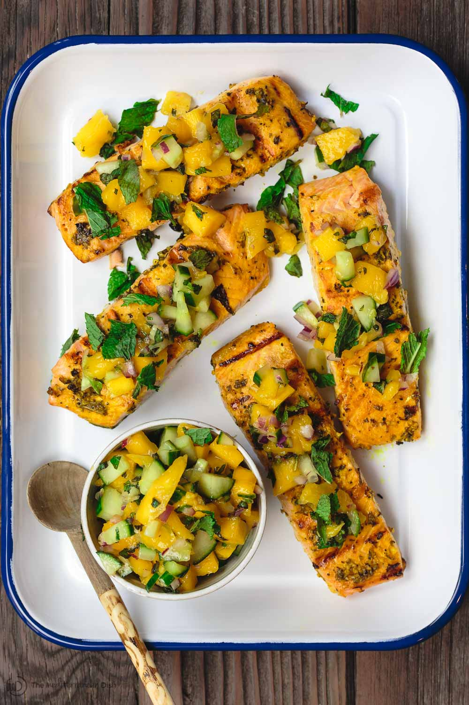
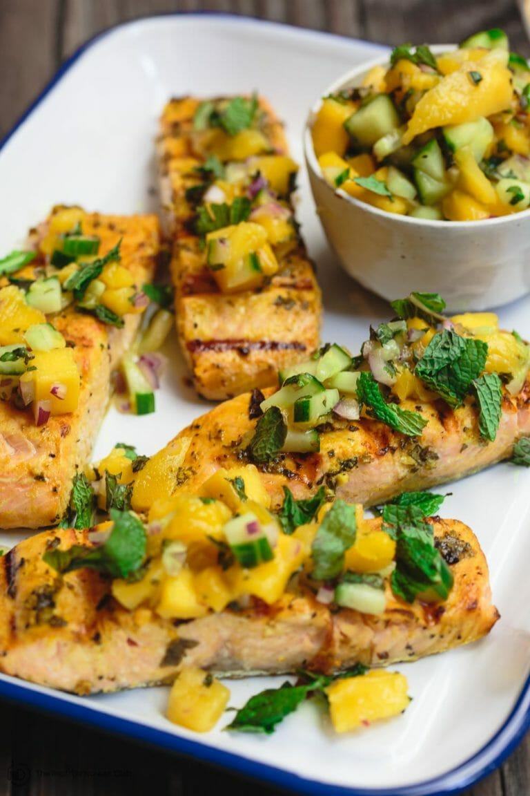

ASTROWORLD FOOD FOUNDATION
Mediterranean Dish
GRILLED SALMON RECIPE WITH MANGO SALSA
This is a simple, bright, herby grilled salmon recipe. The salmon marinade and the fresh mint mango salsa take this fish to a new level of tasty.

HOW TO GRILL SALMON PERFECTLY EVERY TIME
It goes without saying that when grilling fish, you should use a clean gas grill with generously oiled grates. Two more tips for how to grill salmon:
- If you grill your salmon on direct heat as we have in this recipe, you’ll want to use thicker salmon fillets with skin on. The skin holds the salmon together as it cooks over dry heat. The skin also imparts good flavor as it releases fat.
- Cook salmon fillets skinless side down first over high direct heat. While salmon is raw, it is firm still, and there is less chance of the flesh falling apart. Sear the skinless side first and do not disturb it or move it until some grill marks
start to show. Salmon fillets will begin to release a bit of their fat and a thin layer (closest to the heat) will turn opaque. That’s when you have permission to carefully turn the salmon fillets over to the skin side. At this point, the skin
does it’s work holding the fish together while finishing over lower heat.

INGREDIENTS